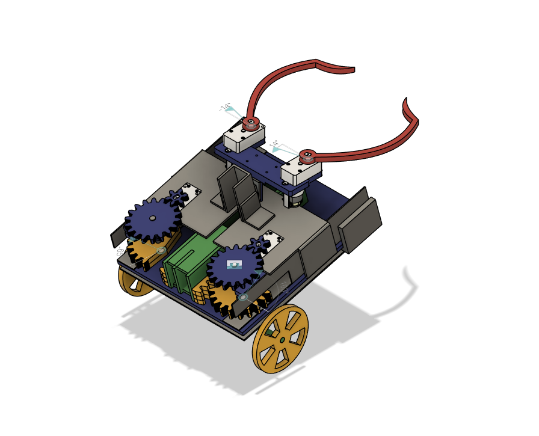

RC Soccer Robot

Overview
This project involved designing and fabricating a remote-controlled mechanical soccer robot for a one-on-one class competition. The objective was to collect and score soccer balls, including elevated and ground-level targets.
Working as part of a four-person team, we designed and fabricated a mechanically driven robot featuring a claw and shooting mechanism. Both mechanisms used belt-and-gear transmissions, while a three-wheel drivetrain provided robot mobility.

Project Workflow
The robot was developed through an iterative engineering process that included CAD design, prototyping, fabrication, assembly, and mechanical testing.
- Designed the robot's mechanical systems and overall assembly in Fusion 360.
- Developed and refined the claw and shooting mechanisms using belt-and-gear transmissions.
- Built early prototypes to identify mechanical issues and evaluate mechanism performance before final fabrication.
- Laser-cut acrylic components for the chassis and structural elements.
- Machined and fabricated metal components for the drivetrain and other structural assemblies.
- Assembled the robot and integrated the motors with the remote-control system through soldered electrical connections.
- Tested and adjusted the mechanical systems to improve reliability and overall performance.
Tools & Technologies
- Fusion 360: 3D CAD modeling, mechanical design, and assembly development.
- Laser Cutting: Fabrication of acrylic chassis and structural components.
- Metal Fabrication: Milling, drilling, cutting, and fabrication of structural and mechanical components.
- 3D Printing: Rapid prototyping and fabrication of custom mechanical parts.
- Belt & Gear Transmissions: Mechanical power transmission for the claw and shooting mechanisms.
- RC Control System: Remote control integration and motor control.
- Electrical Assembly: Motor wiring and soldering for the robot's control system.
Results & Lessons Learned
- Successfully completed a functional robot in time for the class competition, with all major mechanical components operating as intended.
- Scored one point during the competition. Although the robot was less effective than competing designs, the experience highlighted the importance of mechanism efficiency, reliability, and time management during iterative development.
- Prototyping revealed mechanical issues within the belt-and-gear system, allowing the team to identify and address problems before final fabrication.
- Gained hands-on experience taking a mechanical concept from initial CAD design through prototyping, fabrication, assembly, and testing.
- Developed practical fabrication skills including laser cutting, milling, drill press operation, metal cutting, 3D printing, soldering, and mechanical assembly.
- Applied mechanical design principles such as clearance, threaded-hole sizing, and tolerance considerations when fabricating and assembling components.